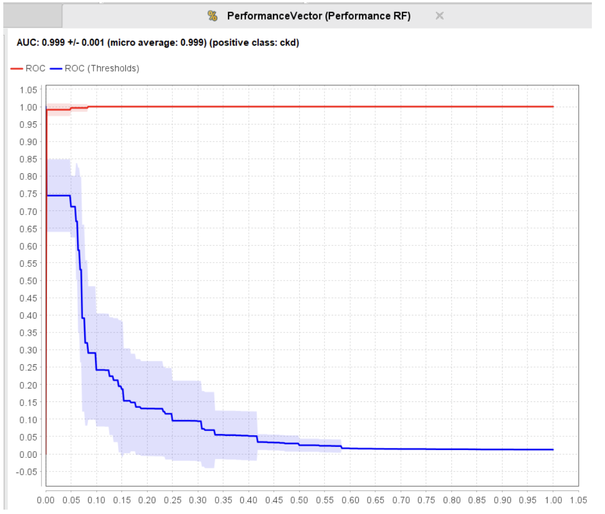
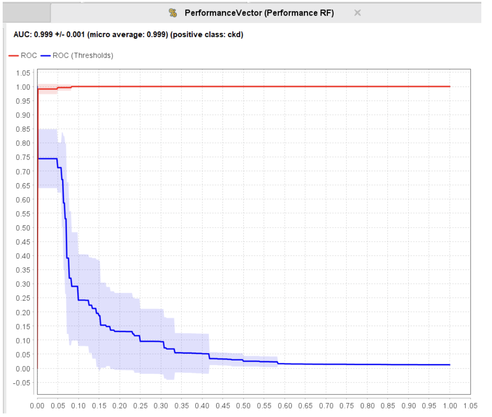

Parcial
Introducción a los Métodos de Aprendizaje Automático
Franco Barlocco, Nicolás Mazzey, Juan Tabárez
Docente: Ernesto Ocampo
Fecha de entrega: 26/11/2024
Diagnóstico Precoz de Enfermedad Crónica de Riñón
Parte 1: Análisis del problema, contexto y documentación correspondiente
La enfermedad crónica de riñón se da cuando los riñones están dañados por al menos 3 meses. En Uruguay hay unos 3.000 pacientes a los que se realiza hemodiálisis o diálisis peritoneal, así como 1.500 trasplantados, con una prevalencia del 10% de la población adulta.
Datos de la organización internacional sin ánimo de lucro World Kidney Day informan que el 10% de la población mundial padece enfermedad renal crónica, que, si no se trata, puede ser mortal.
En España la carga económica de la ERC diagnosticada se prevé que aumente un 13,8%, hasta los 4.890 millones de euros en 2027, lo que representará el 5,56% del gasto sanitario público español total en 2027 (frente a 4,88% en 2022), de los cuales el 42,5% se destinará a TRS (Tratamiento Renal Sustitutivo) (2,4% del gasto sanitario público).
Síntomas
- Náuseas
- Vómito
- Pérdida de apetito
- Fatiga y debilidad
- Problemas para dormir
- Orinar más o menos
- Disminución de la agudeza mental
- Calambres musculares
- Hinchazón de pies y tobillos
- Piel seca y con picazón
- Presión arterial alta (hipertensión) difícil de controlar
- Dificultad para respirar, si se acumula líquido en los pulmones
- Dolor en el pecho, si se acumula líquido alrededor del corazón
Posibles causas
- Presión arterial alta
- Diabetes de tipo 1 o 2
- Obesidad
- Edad superior a 60
- Fumar tabaco
- Obstrucción del tracto urinario
- Infección renal recurrente
- Glomerulonefritis (inflamación de los filtros renales)
Efectos
- Anemia (déficit de células rojas)
- Hipercaliemia (potasio alto)
- Enfermedades cardiovasculares
- Acidosis metabólica (exceso de ácido en el cuerpo)
- Trastorno mineral y óseo
Diagnóstico
Test de sangre: Mide la cantidad de creatinina en la sangre, sustancia que tiene que ser filtrada por los riñones debido a que es un desecho de los músculos. Una alta tasa de creatinina en la sangre indican que los riñones no son capaces de filtrar la creatinina de la sangre por lo cual están dañados.
Test de orina: Mide la cantidad de albúmina en la orina en comparación con la creatinina para saber si los riñones están separando la creatinina de la albúmina presentes en la sangre. Si los riñones no son capaz de filtrar la albúmina entonces el test va a mostrar una cantidad elevada de albúmina en relación con la creatinina en la orina lo cual es signo de que los riñones están dañados
¿Cómo se trata la insuficiencia renal?
Hay dos tratamientos para la insuficiencia renal: diálisis y trasplante de riñón.
- La diálisis es un tratamiento que elimina los desechos y el agua adicional de la sangre. Se encuentran disponibles dos tipos de diálisis: hemodiálisis y diálisis peritoneal.
- Un trasplante de riñón es una operación que coloca un nuevo riñón dentro del cuerpo. El nuevo riñón servirá para reemplazar el trabajo de los riñones dañados. El nuevo riñón puede provenir de un donante vivo (por lo general un familiar o amigo) o de alguien que murió y deseaba ser un donante de órganos.
Parte 2:
Elegimos el dataset de base debido a que ya iniciamos las tareas de preparación y limpieza de datos, no obstante buscamos otros datasets para comparar con el que fue propuesto de base:
En nuestra búsqueda solo encontramos otro dataset muy similar al que teníamos pero con algunas diferencias:
Tiene 202 entradas y 29 columnas de las cuales se distinguen un par de atributos distintos al dataset base:
- El atributo “bp” dividido en 2 atributos “bp Diastolic” con valores 0, 1 y discrete y “bp limit” con valores 0, 1 y 2. A diferencia del dataset de base donde bp tiene una unidad de medida numérica en mmHg.
- Atributo “grf” que indica la glomerular filtration rate que muestra qué tan bien están filtrando nuestros riñones y se mide en milliliters per minute (mL/min).
- Atributo “stage” medida en rangos de “s1” a “s5” siendo “s1”. No hay explicaciones acerca de si simboliza el avance de la enfermedad o algo relacionado con la persona.
- Atributo “affected” medida en rangos 0 y 1. Suponemos que está relacionado con los pacientes con ckd que están siendo afectados por tener esta enfermedad pero hay pacientes con ckd en el dataset que no están afectados.
Análisis previo:
El dataset cuenta con 25 columnas en total de las cuales 11 son numéricas y 14 nominales incluyendo la variable a predecir (class).
El dataset contiene varias columnas con valores faltantes representados por el símbolo “?”. La variable objetivo es class, indica si una observación pertenece o no a la categoría "ckd" (enfermedad renal crónica).
Atributos
- age (numerical): indica la edad en años de la persona.
- bp (numerical): indica la presión sanguínea de la persona medida en mm/Hg.
- sg (nominal): indica la densidad de todas las partículas en la orina y puede tomar los valores (1.005, 1.010, 1.015, 1.020, 1.025).
- al (nominal): indica albúmina, se mide en función de un valor nominal.
- su (nominal): azúcar, se mide en función de un valor nominal.
- rbc (binomial): glóbulos rojos, se clasifica en normal o anormal.
- pc (binomial): células de pus, se clasifican en normal o anormal.
- pcc (binomial): aglomeraciones de células de pus, se clasifican en present o notpresent.
- ba (binomial): bacteria, se clasifica en present o notpresent.
- bgr (numerical): glucosa en sangre aleatoria, se mide en mgs/dl.
- bu (numerical): urea en sangre, se mide en mgs/dl.
- sc (numerical): creatinina sérica, se mide en mgs/dl.
- sod (numerical): sodio, se mide en mEq/L.
- pot (numerical): potasio, se mide en mEq/L.
- hemo (numerical): hemoglobina, se mide en gms.
- pcv (numerical): volumen de células empaquetadas.
- wc (numerical): recuento de glóbulos blancos, se mide en cells/cumm.
- rc (numerical): recuento de glóbulos rojos, se mide en millions/cmm.
- htn (binomial): hipertensión, toma los valores yes o no.
- dm (binomial): diabetes mellitus, toma los valores yes o no.
- cad (binomial): arteriopatía coronaria, toma los valores yes o no.
- appet (binomial): apetito, toma los valores good o poor.
- pe (binomial): pedal edema, toma los valores yes o no.
- ane (binomial): anemia, toma los valores yes o no.
- class (binomial): toma los valores ckd o notckd.
Análisis de cada atributo
1. Atributos Numéricos
Los atributos numéricos como age, bp (presión sanguínea), bgr (glucosa en sangre), bu (urea), sc (creatinina sérica), entre otros, presentan variaciones significativas en sus valores:
- Edad (age):
- Rango: De 2 a 90 años.
- Valores faltantes: 9 casos.
- Outliers: 0 casos.
- Distribución: La mayoría de las observaciones están alrededor de los 60 años.
- Correlación negativa leve con CKD (-0.227).
- Presión sanguínea (bp):
- Rango: De 50 a 180 mmHg.
- Valores faltantes: 12 casos.
- Outliers: 3 casos con bp mayor a 110 mmHg.
- Correlación negativa leve con CKD (-0.294).
- Glucosa en sangre (bgr):
- Rango: De 22 a 490 mgs/dl.
- Valores faltantes: 44 casos.
- Outliers: 1 caso con 22 mgs/dl.
- Valores elevados en pacientes con CKD.
- Correlación negativa moderada con CKD (-0.42).
- Creatinina sérica (sc):
- Rango: De 0.4 a 76 mg/dl.
- Valores faltantes: 17 casos.
- Outliers: 3 casos con sc mayor a 24 mg/dl.
- Correlación negativa leve con CKD (-0.3).
- Hemoglobina (hemo):
- Rango: De 3.1 a 17.8 gms.
- Valores faltantes: 52 casos.
- Outliers: 1 caso con hemo 3.1 gms.
- Valores bajos están asociados con CKD, correlación positiva muy fuerte (0.769).
- Urea en la sangre (bu):
- Rango: De 1.5 a 391 mgs/dl.
- Valores faltantes: 19 casos.
- Outliers: 1 caso con bu 1.5 mgs/dl y 4 casos con bu mayor a 235 mgs/dl.
- Valores altos (más de 50 mgs/dl) están asociados con CKD, correlación negativa moderada (-0.381).
- Sodio (sod):
- Rango: De 4.5 a 163 mEq/L.
- Valores faltantes: 87 casos.
- Outliers: 1 caso con 4.5 mEq/L y 1 con 163 mEq/L.
- Valores bajos (menos de 130 mEq/L) están asociados con CKD, correlación positiva moderada (0.376).
- Potasio (pot):
- Rango: De 2.5 a 47 mEq/L.
- Valores faltantes: 88 casos.
- Outliers: 2 casos con más de 39 mEq/L.
- Valores elevados (más de 5 mEq/L) están asociados con CKD, correlación negativa leve (-0.085).
- Recuento de glóbulos rojos (rbcc):
- Rango: De 2.1 a 8 millones/cmm.
- Valores faltantes: 131 casos.
- Outliers: 1 caso con más de 8 millones/cmm.
- Valores bajos (menos de 4.4 mEq/L) están asociados con CKD, correlación positiva fuerte (0.699).
- Recuento de glóbulos blancos (wbcc):
- Rango: De 2200 a 26400 cells/cmm.
- Valores faltantes: 106 casos.
- Outliers: 2 casos con más de 21600 cells/cmm.
- Valores bajos (menos de 4300 cells/cmm) y valores elevados (más de 11000 cells/cmm) están asociados con CKD, correlación negativa leve (-0.232).
2. Atributos Categóricos o Nominales
Los atributos categóricos incluyen valores como sg (gravedad específica), al (albúmina en orina), y otros que presentan patrones claros:
- Gravedad específica (sg):
- Rango: De 1.005 a 1.025.
- Valores faltantes: 47 casos.
- Outliers: 0 casos.
- Los valores más comunes son 1.010 y 1.015.
- Baja gravedad específica está relacionada con CKD.
- Correlación positiva fuerte con CKD (0.732).
- Albúmina (al):
- Rango: De 0 a 5.
- Valores faltantes: 46 casos.
- Outliers: 1 caso con al de 5.
- Los valores elevados están fuertemente asociados con CKD.
- Correlación negativa fuerte con CKD (0.627).
- Azúcar (su):
- Rango: De 0 a 5.
- Valores faltantes: 49 casos.
- Outliers: 0 casos.
- Elevados niveles de azúcar son menos frecuentes, pero suelen estar presentes en casos de CKD.
- Correlación negativa moderada con CKD (-0.344).
- Volumen de células empaquetadas (pcv):
- Rango: De 9 a 54.
- Valores faltantes: 71 casos.
- Outliers: 1 caso con pcv de 9.
- Valores bajos (menos de 40) están presentes sólo en pacientes con CKD.
- Correlación positiva fuerte con CKD (0.741).
3. Atributos Binarios
Los atributos binarios como htn (hipertensión), dm (diabetes mellitus), cad (arteriopatía coronaria), pe (edema en piernas), y ane (anemia) muestran asociaciones notables:
- Hipertensión (htn):
- Rango: Yes o No.
- Valores faltantes: 2 casos.
- Más prevalente en pacientes con CKD.
- Asociación positiva con la variable objetivo.
- Correlación positiva moderada con CKD (0.589).
- Diabetes Mellitus (dm):
- Rango: Yes o No.
- Valores faltantes: 2 casos.
- Ligera asociación positiva con CKD.
- Correlación positiva moderada con CKD (0.557).
- Anemia (ane):
- Rango: Yes o No.
- Valores faltantes: 1 caso.
- Alta prevalencia en pacientes con CKD, lo que la convierte en un fuerte indicador.
- Correlación negativa leve con CKD (-0.325).
- Arterias coronarias (cad):
- Rango: Yes o No.
- Valores faltantes: 2 casos.
- Presente únicamente con baja prevalencia en pacientes con CKD.
- Correlación positiva leve con CKD (-0.235).
- Edema de pedal (pe):
- Rango: Yes o No.
- Valores faltantes: 1 caso.
- Presente únicamente con moderada prevalencia en pacientes con CKD.
- Correlación negativa leve con CKD (-0.374).
- Apetito (appet):
- Rango: Yes o No.
- Valores faltantes: 1 caso.
- Presente únicamente con moderada prevalencia en pacientes con CKD.
- Correlación negativa leve con CKD (-0.393).
- Glóbulos blancos (pc):
- Rango: Normal o Abnormal.
- Valores faltantes: 65 casos.
- Outliers: 0 casos.
- Valores anormales de glóbulos blancos son únicamente moderadamente frecuentes en pacientes con CKD.
- Correlación negativa moderada con CKD (-0.462).
- Grupos de glóbulos blancos (pcc):
- Rango: Present o Notpresent.
- Valores faltantes: 4 casos.
- Grupos presentes de glóbulos blancos se dan en su mayoría en pacientes con niveles anormales de glóbulos blancos y solo están levemente frecuentes en pacientes con CKD.
- Correlación negativa leve con CKD (-0.263).
- Bacteria (ba):
- Rango: Present o Notpresent.
- Valores faltantes: 4 casos.
- Bacterias están levemente presentes solo en pacientes con CKD y en la mayoría de los casos hay glóbulos blancos anormales.
- Correlación negativa leve con CKD (-0.185).
- Glóbulos rojos (rbc):
- Rango: Normal o Abnormal.
- Valores faltantes: 152 casos.
- Valores anormales frecuentes solo en pacientes con CKD.
- Correlación negativa moderada con CKD (-0.555).
4. Relación con la Variable Objetivo (class)
Atributos como sg (0.732), sc, hemo (0.769), pcv (0.741), rbcc (0.699), al (-0.627), htn (0.589) y dm (0.557) muestran mayor correlación con la variable objetivo.
Variables como age (-0.227) o pot (-0.085), aunque descriptivas, tienen baja correlación directa con CKD.
Visualización de las correlaciones en RapidMiner
5. Outliers
Varias columnas tienen outliers leves, como bp, sc, pot, wbcc, pero no superan más de 10 outliers.
Deberíamos removerlos directamente para mejorar la performance del modelo.
6. Datos Faltantes
Varias columnas tienen datos faltantes significativos, como rbc, rbcc y wbcc.
Los datos faltantes deberán ser eliminados o modificados para garantizar la calidad del modelo. Para la modificación podemos usar el valor promedio del atributo.
Visualización en Excel: Primero abrimos el dataset en Excel para detectar valores faltantes o casos interesantes en nuestro dataset.
Como podemos ver, tenemos varias columnas con muchos valores faltantes, por ejemplo, “rbc”, “pc”, “sod”,”pot”,etc.
7. ¿Cuáles son los procedimientos y dificultades para obtener datos correctos de estos atributos?
Atributos como sg y asumimos que al y su también se obtienen del análisis de muestras de orina.
Atributos como sc, rbc, pcc, bgr, bu, sod, pot, wbcc, rbcc, hemo, pcv se obtienen mediante el análisis de muestras de sangre.
Atributos como htn, db, ane, cad, pe se obtienen mediante test específicos para cada enfermedad.
El atributo bp se obtiene tomándole la presión al paciente.
8. ¿Cómo cambia la probabilidad de desarrollar CKD en relación con otras enfermedades relacionadas (ej., diabetes, hipertensión), sexo o edad?
A nivel del dataset, los pacientes que no tienen CKD no presentan enfermedades relacionadas como diabetes, hipertensión, anemia o enfermedades cardiovasculares.
Sin embargo, en los pacientes con CKD, más del 50% están asociados a enfermedades como diabetes o hipertensión, y alrededor de un 20% están relacionados con anemia o enfermedades cardiovasculares.
A nivel del dataset, se observa que la edad influye en la probabilidad de desarrollar CKD, ya que la media de edad de los pacientes con CKD es de 54 años, mientras que la media de los pacientes sin CKD es de 46 años.
No obstante, hay 132 pacientes con CKD menores de 60 años y 118 pacientes con CKD de 60 años o más, lo cual es inusual considerando que una de las principales causas de CKD es tener más de 60 años.
Parte 3:
A) Clasificación del problema
El problema es un problema de clasificación supervisada debido a que tenemos que predecir si un paciente tiene una de las dos posibles categorías: “ckd” o “notckd”, en base a datos de entrenamiento que incluyen ejemplos de pacientes con “ckd” y “notckd” acompañados de atributos multivariados. Estos atributos permiten ajustar el modelo para predecir esta enfermedad. La variable objetivo es el atributo class, con valores “ckd” y “notckd”.
B) Algoritmos para resolver el problema:
En este caso utilizaremos tres algoritmos para resolver el problema:
- KNN: Es flexible ya que no asume ninguna distribución específica de los datos y funciona en la mayoría de problemas de clasificación supervisada. Es crucial normalizar los datos, ya que KNN se basa en distancias para calcular relaciones, y los atributos numéricos grandes pueden afectar el rendimiento del algoritmo.
- Regresión Logística: Está diseñada para problemas de clasificación binaria y calcula la probabilidad de que un evento ocurra o no. En este caso, predice si un paciente tiene ckd o no. Es rápido, interpretable y permite ver cómo influye el conjunto de atributos predictores en las predicciones.
- Random Forest: Combina múltiples árboles de decisión para mejorar la precisión y evitar el sobreajuste. Este algoritmo también nos proporciona métricas para evaluar qué atributos son más relevantes y tiene una gran capacidad de ajuste mediante parámetros como la cantidad de árboles, la profundidad y el pruning, lo que permite optimizar su rendimiento.
C) Validación del modelo
Para realizar la prueba del modelo, y considerando que no tenemos un dataset de prueba, es crucial separar una parte de los datos para realizar las pruebas. Dividimos el dataset en dos particiones: 70% para entrenamiento y 30% para testeo.
Para reducir el sesgo en la partición, utilizamos la técnica de Cross Validation. En esta técnica, el dataset se divide en “k” subconjuntos llamados folds. El modelo se entrena con k-1 subconjuntos y se testea con el “k” subconjunto restante. Este proceso se repite “k” veces probando con todos los subconjuntos como test. Al finalizar, se promedian las métricas obtenidas de las “k” iteraciones.
Métricas de evaluación
Al tratarse de un problema de clasificación binaria, debemos considerar casos positivos y negativos:
- Casos positivos: Pacientes con la enfermedad “ckd”.
- Casos negativos: Pacientes sin la enfermedad “ckd” (es decir, “notckd”).
Es crucial interpretar correctamente qué se considera un caso positivo y qué un caso negativo, ya que las métricas se basan en esta distinción. Además, se clasifican los casos en:
- Verdaderos positivos: Casos correctamente identificados como “ckd”.
- Verdaderos negativos: Casos correctamente identificados como “notckd”.
- Falsos positivos: Casos identificados como “ckd” cuando no lo son.
- Falsos negativos: Casos identificados como “notckd” cuando en realidad son “ckd”.
Estas métricas son esenciales para evaluar el rendimiento del modelo y garantizar predicciones precisas.
Los verdaderos positivos son aquellas personas que tienen ckd y el modelo predijo que tienen ckd correctamente. Para los casos verdaderos negativos, son las personas que no tienen ckd (“notckd”) y el modelo predijo “notckd” correctamente.
Los falsos positivos son las personas con “notckd” de las cuales el modelo predijo que tenían “ckd” incorrectamente. Por otro lado, los falsos negativos son personas con ckd de las cuales el modelo predice incorrectamente “notckd”.
Es fundamental tener claro estos casos para poder aplicarlos a las siguientes métricas de evaluación:
Precision (Accuracy):
Proporciona el porcentaje de predicciones correctas sobre el total de predicciones. Se calcula sumando ambas cantidades de casos verdaderos positivos y negativos y dividiendo el resultado sobre el total de casos.
(TP + TN)/(TP + FP + TN +FN)
Sensibilidad (Recall):
Proporciona el porcentaje de predicciones verdaderas positivas correctas sobre el total de predicciones verdaderas positivas y falsas negativas totales. Se calcula dividiendo el total de verdaderos positivos entre la suma de verdaderos positivos más los falsos negativos.
Una alta sensibilidad indica que el modelo está bien ajustado para predecir cuando un paciente tiene ckd sin dejar de lado ningún paciente enfermo.
TP/(TP + FN)
Especificidad (Specificity):
Proporciona el porcentaje de predicciones negativas correctas sobre el total de predicciones verdaderas negativas y falsas positivas totales. Se calcula dividiendo el total de verdaderos negativos entre la suma de verdaderos negativos más los falsos positivos.
ckd sin clasificar erróneamente a pacientes como enfermos cuando no lo están.TN/(TN + FP)
Una alta especificidad indica que el modelo está bien ajustado para predecir cuando un paciente no tiene
Precisión de clase (Precision):
Proporciona el porcentaje de predicciones positivas verdaderas sobre el total de predicciones positivas totales. Se calcula dividiendo el total de verdaderos positivos entre la suma de verdaderos positivos más los falsos positivos.
TP/(TP + FP)
Una alta precisión de clase indica que el modelo está bien ajustado para diferenciar los casos ckd que realmente son verdaderos y no da falsas alarmas en cuanto a posibles enfermos.
Matriz de confusión:
Para facilitar el análisis de estas métricas en una sola tabla, existe la matriz de confusión. En ella se agrupan todos los casos posibles de valores positivos y negativos con los verdaderos y falsos, formando una matriz que refleja cuántos casos hubo de cada tipo. También se calculan los porcentajes asociados a cada métrica donde corresponda en la tabla.
Esto permite visualizar más fácilmente las métricas, ofreciendo una representación visual del rendimiento del modelo. Además, evita tener que calcular manualmente cada métrica, ya que proporciona la cantidad de casos que hubo de cada tipo.
Curvas ROC y AUC:
En una curva ROC se grafica la fracción de verdaderos positivos (sensitivity o recall) que van apareciendo en los datos (eje vertical) frente a la fracción de falsos positivos (eje horizontal). Una curva que se acerca más al rincón superior izquierdo indica un mejor desempeño del modelo.
Además, el área bajo esta curva (AUC) mide qué tan bueno es el modelo en general para distinguir entre las dos clases. Si el valor del área bajo la curva es 1, el modelo es ideal; mientras más cerca de 0 esté, peor será su rendimiento para realizar esta distinción.
d) El modelo solución del problema en RapidMiner es el siguiente:
Lectura y configuración del dataset:
Empezamos con el operador Read CSV, que se encarga de cargar el dataset para su uso en el modelo, evitando realizar importaciones manuales. Luego, configuramos los roles de las columnas: asignamos el rol de label a la columna class (variable objetivo, con valores "ckd" y "notckd") y configuramos el rol de id a la columna id para evitar que sea utilizada como atributo predictor.
Gestión de valores faltantes:
Utilizamos el operador Declare Missing Values para marcar las instancias de "?" en el CSV como valores faltantes. Esto es necesario porque, de lo contrario, RapidMiner trataría estos valores como datos válidos, lo cual sería incorrecto.
Filtrado de atributos y outliers:
Aplicamos el operador Filter Examples para filtrar outliers manualmente, como se explicó en la sección 2.5. Dado que no hay demasiados outliers, este enfoque nos brinda mayor control sobre el proceso. Por ejemplo, para eliminar el registro con id 50, configuramos el filtro para excluir este valor invirtiendo la selección, y marcamos la opción "Match Any" para asegurar que se apliquen correctamente las condiciones. De lo contrario, ningún dato tiene como id = 50 e id = 62, por lo cual con “Match All” no se filtraría ningún dato.
Selección de atributos con datos faltantes:
Usamos el operador Select Attributes para eliminar atributos con un exceso de valores faltantes. En este caso, descartamos las columnas rbc, rbcc y wbcc, ya que cada una tenía más del 25% de sus valores como faltantes (más de 100 cada uno).
Transformación de datos:
- Cambiamos la variable objetivo de nominal a binomial mediante el operador Nominal to Binomial, ya que solo tiene dos valores posibles (ckd y notckd).
- Usamos el operador Guess Types para corregir los tipos de datos. Al convertir el archivo CSV desde formato ARFF, todos los atributos se marcaron como nominales, incluidos los numéricos. Este operador reasigna los tipos de manera automática, con una significativa mejora del rendimiento.
Multiplicación y análisis de datos:
Insertamos el operador Multiply para realizar tres análisis simultáneos y también ver el dataset antes de ejecutar cada algoritmo. En paralelo, utilizamos el operador Correlation Matrix para calcular la matriz de correlación entre atributos y analizar las relaciones entre ellos, incluida la variable objetivo.
Validación cruzada:
Las tres soluciones se encapsularon en un operador Cross Validation con 10 folds, muestreo aleatorio usando semilla local fija. Este enfoque minimiza el sesgo asociado con la partición del dataset. En las tres soluciones configuramos un operador Apply Model dentro de la validación cruzada, conectado a un operador Performance Binomial Classification para generar métricas como curvas ROC, sensibilidad, especificidad y precisión, estableciendo "ckd" como la clase positiva esenciales para el análisis posterior a la ejecución de las soluciones.
Implementación de algoritmos:
- KNN:
- Primero normalizamos todos los atributos que pudieran ser normalizables con la transformación de rango entre 0 y 1, ya que KNN considera las distancias y queremos que todas estén estandarizadas.
- Dentro de Cross Validation está el operador KNN. Configuramos el tipo de medida como mixto, utilizando la medida euclidiana mixta por defecto.
- El parámetro “k” fue ajustado con el operador Optimizer para encontrar el mejor valor posible, que fue 23.
- Regresión Logística:
- Insertamos el operador dentro del Cross Validation.
- Cambiamos el solver a IRLSM, ya que el dataset no tiene tantas columnas predictoras.
- El resto de los parámetros se dejaron por defecto. Sin embargo, el manejo de valores faltantes fue relevante y consideramos que reemplazarlos por el valor promedio era la opción correcta.
- Random Forest:
- Usamos el operador Replace Missing Values debido a que los valores faltantes afectaban el comportamiento del algoritmo. Con este operador, reemplazamos los valores faltantes por el promedio.
- Insertamos el operador dentro del Cross Validation y cambiamos un par de parámetros, como el uso de semilla local para mantener consistencia, y el criterio para que sea accuracy, ya que queremos maximizar la precisión del árbol completo para obtener mejores predicciones.
- El número de árboles fue ajustado manualmente en 253, ya que observamos mejorías entre 100 y 1000 árboles. Sin embargo, el Optimizer demoraba mucho, y aunque consideramos la profundidad, no hubo cambios significativos en el rendimiento, por lo que no fue ajustada.
e) Para cada proceso tenemos las siguientes métricas de evaluación:
KNN
Regresión Logística

Random Forest
 

f) En base a los resultados que obtuvimos podemos ver que en los 3 casos los niveles de accuracy superan el 95% en los 3 casos, lo cual es muy bueno ya que nos dan un diagnóstico preciso de los pacientes testeados. De estas 3 soluciones el random forest es superior con accuracy de 99.22% y la peor es knn con accuracy de 95.07%.
En estos tipos de modelo donde se predicen enfermedades lo más importante no es la precisión sino los falsos positivos y falsos negativos. Si fuera cáncer, sería horrible que el modelo tuviera gran parte de los casos como falsos positivos porque diagnosticaríamos a pacientes con cáncer cuando no lo tienen.
En este caso, como hablamos de CKD, la enfermedad tiene un impacto negativo en la persona y tiene un tratamiento que se tiene que cumplir, por lo cual soluciones como regresión logística con 4 falsos positivos y random forest con 3 falsos positivos de 150 personas sin CKD son consecuencias a considerar aunque el margen es bajo.
Por otro lado, si bien KNN no tiene falsos positivos, lo cual es bueno, tiene 19 falsos negativos, lo cual es un gran número de falsos negativos e indica que el algoritmo es el menos sensible de las tres soluciones, ya que regresión logística tiene 6 falsos negativos y random forest tiene 0. Este gran número de falsos negativos es gravísimo porque un falso positivo se puede investigar a través de otros test para validarlo, pero un falso negativo no se suele investigar a fondo a no ser que la persona empeore.
Recapitulando un poco entre las 3 soluciones:
KNN tiene la peor precisión 95.07%, un gran número de falsos negativos pero tiene 0 falsos positivos. A raíz de estas estadísticas, esta sería la peor solución de las 3 planteadas.
Regresión Logística muestra ser una solución intermedia, segunda mejor precisión 97.42%, 6 falsos negativos y tiene la mayor cantidad de falsos positivos por un margen muy leve. Los errores de predicción son leves y el algoritmo no es malo para nada, pero hay una solución mejor por muy poco.
Random Forest parece ser la mejor solución teniendo la mejor precisión 99.22%, 0 falsos negativos y 1 falso positivo más que regresión logística. Estas estadísticas son muy buenas, pero hay que considerar que es el algoritmo más costoso de ejecutar con la generación de 253 árboles por cada iteración del cross validation.
g) Mirando las curvas ROC de cada solución podemos ver que las 3 son muy similares, pero se destaca la curva de KNN por tener la curva ROC perfecta con un AUC de 1, la recta roja bien arriba y a la izquierda, lo cual indica un excelente desempeño para clasificar casos positivos. Al no tener falsos positivos es normal que la curva ROC sea perfecta en este caso.
Viendo las otras 2 curvas podemos destacar que ambas curvas son muy similares, pero la curva de RL tiene mucho ruido representado por el área azulada alrededor de la curva azul y a su vez la curva ROC está un poco más baja al principio. A RL le toma 0.25 de eje X para llegar a 1 mientras que a RF le toma 0.10.
h) Enlace al Google Collab con la solución en python:
https://colab.research.google.com/drive/1C39qcjQwy6DJhSBA1nL00HYc7zjFvMt2?usp=sharing
Analizando los resultados obtenidos de python podemos ver a nivel de la matriz de confusión de knn que tiene 7 falsos negativos menos que en rapidminer lo cual es mucho mejor, RL tiene 5 falsos negativos y 4 falsos positivos menos y RF tiene 1 falso negativo y 1 falso positivo más porque no en python no existe el criterio accuracy para RF utilizado.
Referencias y Bibliografía consultada:
- Kidney.org. (n.d.). About chronic kidney disease. Recuperado de https://www.kidney.org/atoz/content/about-chronic-kidney-disease
- Mayo Clinic. (n.d.). Enfermedad renal crónica: Síntomas y causas. Recuperado de https://www.mayoclinic.org/diseases-conditions/chronic-kidney-disease/symptoms-causes/syc-20354521
- MedlinePlus. (n.d.). Prueba de creatinina. Recuperado de https://medlineplus.gov/spanish/pruebas-de-laboratorio/prueba-de-creatinina/
- Fundación BBVA. (n.d.). Sérico. Recuperado de https://www.fbbva.es/diccionario/s%C3%A9rico/
- Ministerio de Salud Pública. (2022). Salud pública promueve controles para diagnóstico oportuno y tratamiento. Recuperado de https://www.gub.uy/ministerio-salud-publica/comunicacion/noticias/salud-publica-promueve-controles-para-diagnostico-oportuno-tratamiento
- Organización Panamericana de la Salud. (2022). Día Mundial del Riñón 2022: Hearts of Americas: Salud renal para todos. Recuperado de https://www.paho.org/es/noticias/9-3-2022-dia-mundial-rinon-2022-hearts-americas-salud-renal-para-todos
- Revista Nefrología. (2024). Proyección de la carga clínica y económica de la enfermedad renal crónica. Recuperado de https://www.revistanefrologia.com/es-proyeccion-carga-clinica-economica-enfermedad-articulo-S0211699524000237
- Mayo Clinic. (n.d.). Enfermedad renal crónica: Tratamiento. Recuperado de https://www.kidney.org/es/kidney-topics/tratamiento